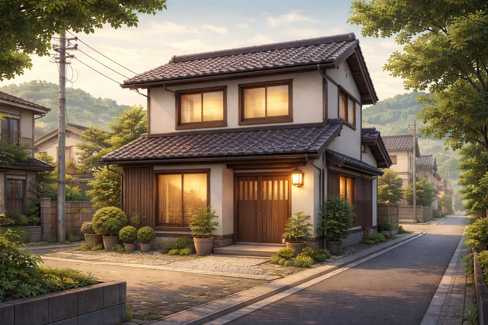
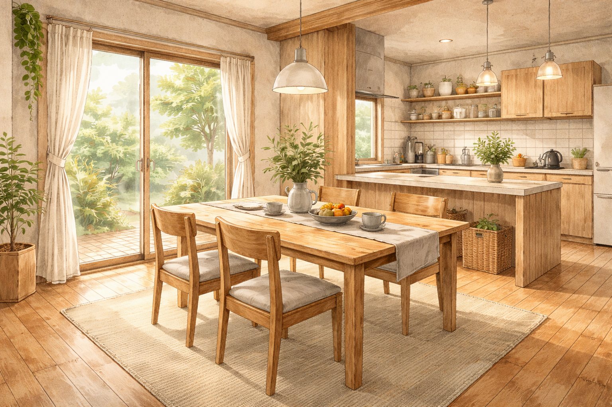
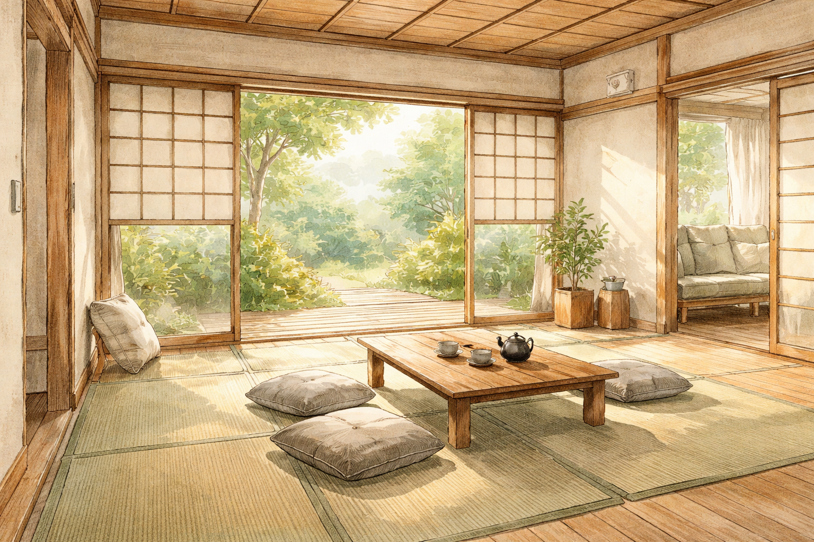
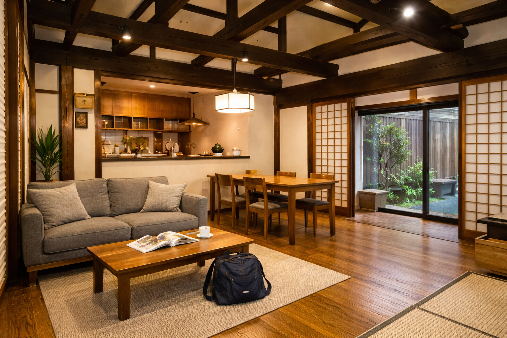
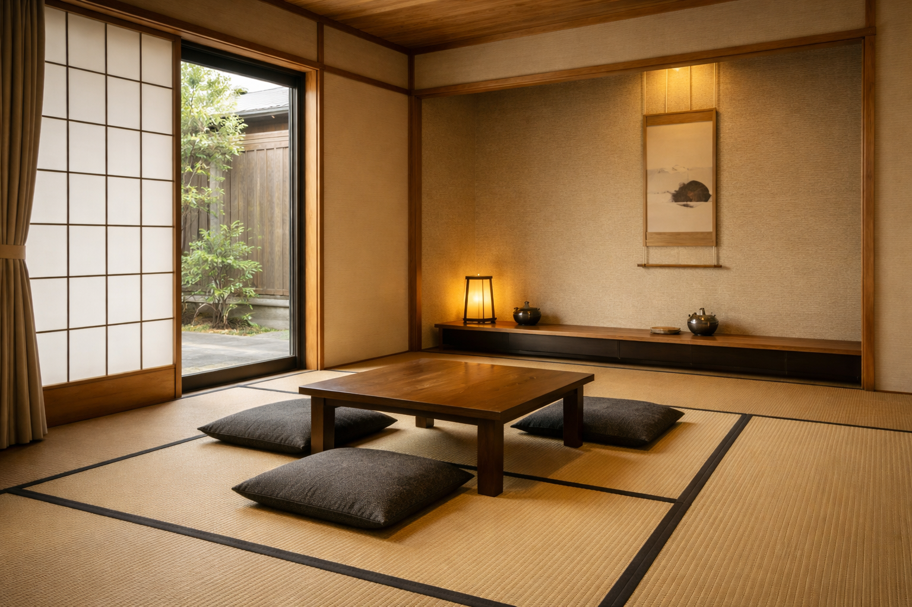
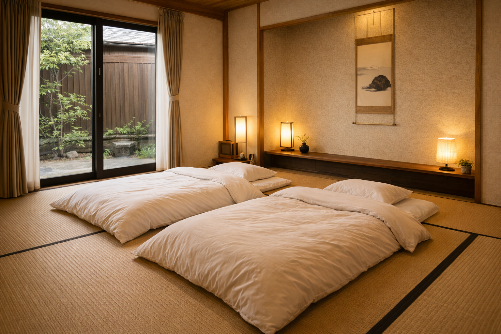
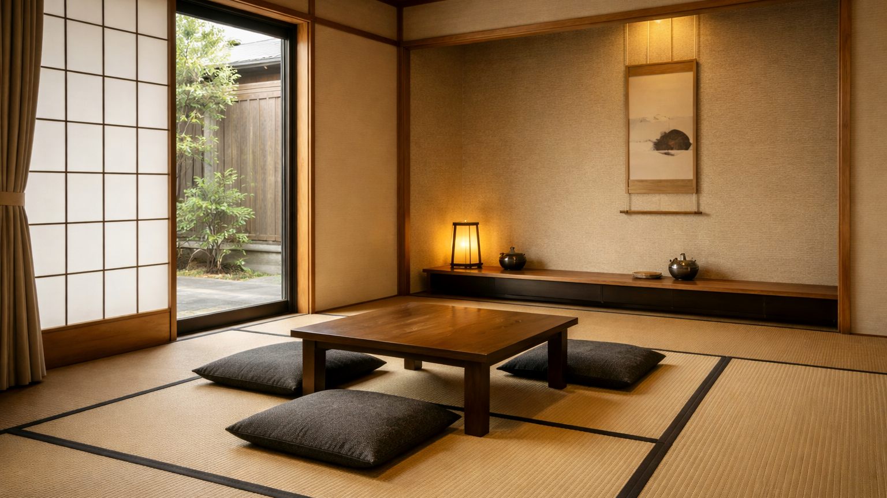

金沢観光にちょうどいい場所 Convenient location in Kanazawa
観光のあと、静かに休むための場所。 A quiet base after sightseeing.
民泊について About
この民泊は、
「静かに過ごす場所があってもいい」
という思いから生まれました。
This house was created with the idea that
it’s okay to have a quiet place to simply stay.
観光地の中心にある宿でも、
特別な体験ができる宿でもありません。
It is not located in the heart of tourist areas,
nor is it a place for special experiences.


予定を詰め込みすぎず、
何もしない時間を大切にしたい方に
向いています。
This place suits those who prefer not to overfill their schedules
and value time spent doing nothing.
にぎやかな場所や、
常に外出を予定している方には、
合わないかもしれません。
It may not be suitable for those who seek lively places
or plan to be out all the time.
部屋 Rooms

リビング・ダイニング・キッチン Living, Dining & Kitchen
この家の中心となるLDKです。 観光から戻ったあと、荷物を広げて一息つける空間として 静かに過ごせるよう整えています。 This is the heart of the house. A calm and comfortable space where you can relax, unpack your belongings, and take a break after sightseeing.

和室 Japanese-style Room
畳のある、静かな和室です。 予定を詰め込まず、 何もしない時間を過ごしたい方に向いています。 A quiet Japanese-style room with tatami mats. Ideal for guests who want to slow down and enjoy doing nothing.

寝室 Bedroom
夜は静かに休める寝室です。 清潔さと落ち着きを大切にし、 ゆっくりと体を休められるよう整えています。 A quiet bedroom designed for restful nights. Clean, calm, and comfortable, so you can relax and recharge.

滞在 Stay
ただいま Come back
観光から戻ったあと、この家は「一度立ち止まる場所」になります。
靴を脱いで、荷物を置いて、次の予定を急いで決めなくても大丈夫です。
After sightseeing, this house becomes a place to pause.
Take off your shoes, drop your bags, and slow down.
何もしない Do nothing
予定を詰め込まなくても、この家で過ごす時間があります。
畳に座ったり、窓の外を眺めたり。何もしない時間も、滞在の一部です。
You don’t have to fill your schedule.
Sit on tatami, watch outside—doing nothing is part of the stay.
また出かける Go out again
朝は、静かに準備をして出かけられます。
観光の拠点として、毎日ここに戻ってこられる安心感があります。
In the morning, you can prepare quietly and head out.
It’s a calm base you can return to each day.
アクセス Access
金沢観光の拠点として、移動しやすい場所です。 A convenient base for exploring Kanazawa.
最寄り Nearest
- バス停：〇〇（徒歩〇分） Bus stop: XX (X min walk)
- コンビニ：〇〇（徒歩〇分） Convenience store: XX (X min walk)
主要スポットまで To major spots
- 金沢駅：〇分 Kanazawa Station: X min
- 兼六園：〇分 Kenrokuen: X min
- ひがし茶屋街：〇分 Higashi Chaya District: X min
駐車・チェックイン Parking & check-in
駐車：〇〇（台数 / 料金）／チェックイン：〇〇 Parking: XX / Check-in: XX
施設案内 Facilities
- 一軒家まるごと
- Wi-Fiあり
- キッチンあり
- 浴室あり
- Entire house
- Wi-Fi
- Kitchen
- Bathroom